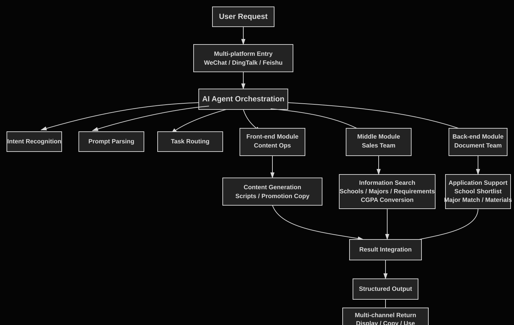
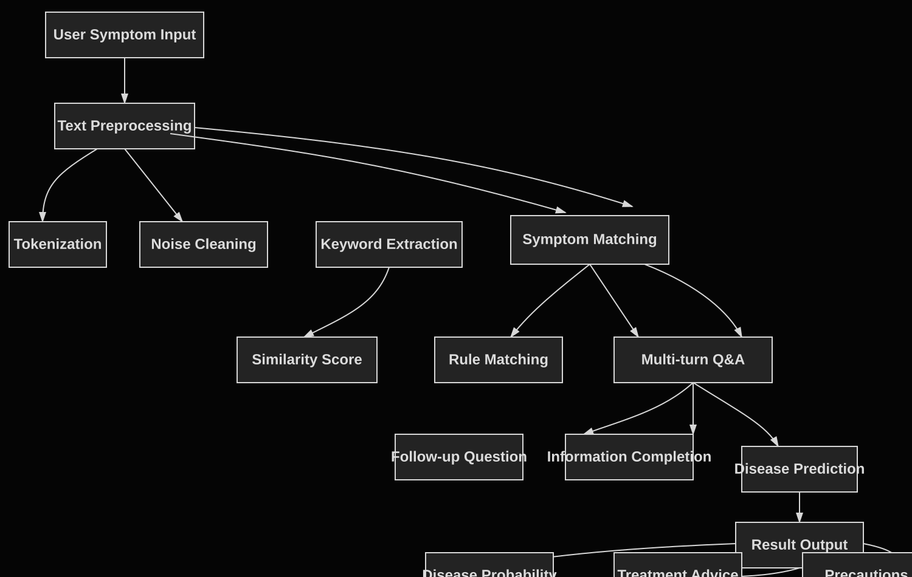

AI workflow breakdown
Education consulting tasks such as query, recommendation, conversion, and content generation were organized into reusable workflows and structured result displays.
Computer Science undergraduate portfolio: AI workflows, front-end interaction, and software project practice.
This portfolio brings together recent internship, coursework, and personal projects, including an enterprise AI Agent workflow, a Java grade management system, a Flutter campus transport demo, a healthcare information retrieval demo, and an interactive front-end page. Each project is organized with accessible demos, technical notes, responsibilities, and implementation boundaries where possible.
Internship availability: July - December 2026. Main interests: AI application development, front-end development, and software development.
Profile
Computer Science Undergraduate · AI Application · Front-end
The projects cover AI workflow design, front-end interaction, basic system logic, and online deployment. Each ability is connected to a specific project instead of only being listed as a keyword.
Education consulting tasks such as query, recommendation, conversion, and content generation were organized into reusable workflows and structured result displays.
Projects include forms, result cards, modals, copy actions, workflow diagrams, responsive layouts, and online demo pages.
The Java grade management system covers login, student information management, grade calculation, resit filtering, and CSV-based data handling.
Projects are organized with GitHub Pages, online demos, workflow diagrams, and notes so the functions and implementation boundaries can be reviewed quickly.
Chengdu Hongqi Education Technology Co., Ltd.
This section includes the projects most suitable for review at this stage. Each project describes the background, responsibilities, technical focus, and output. Public projects include online demos; projects involving internal data or business rules are shown only through desensitized demos and workflow notes.
Quick access to public project demos. Detailed background and implementation notes are listed below.
Internal AI productivity tool participated in during internship
The project came from internal productivity needs in an education consulting business, covering sales queries, writing support, content generation, GPA conversion, and school information collection. The internal version involves business data, business rules, and integration details, so the public page only keeps a desensitized demo, workflow notes, and front-end interaction examples.

Java desktop system with an additional grade calculation web demo
A Java-based student grade management system covering user login, student information management, grade entry, final-score calculation, resit-list filtering, and report export. To reduce review friction, the core grade calculation logic was also extracted into a web demo.
Flutter demo designed around campus transport and parking scenarios
The project is designed around campus transport scenarios, including shuttle routes, parking reservation, real-time status, ETA countdown, and role-based entry points. The focus is mobile UI, state display, and interaction animation rather than a static UI mockup.
A small health-question prototype for text processing and information retrieval practice
The project was adjusted from a symptom Q&A prototype into an information retrieval demo to avoid diagnosis, prescription, or treatment-advice wording that is not suitable for a public demo. The current version extracts keywords from user input and returns related health information, matching evidence, and risk reminders.

Native front-end interactive page project
A native HTML, CSS, and JavaScript interactive page project with an anniversary counter, typewriter text, modal interactions, a message form, animation effects, and mobile adaptation. The project was independently completed from page design and front-end implementation to GitHub Pages deployment.
Personal website organized for internship applications and project review
The current website is used to organize project entries, technical notes, internship experience, education background, and contact information. The focus is not complex visual effects, but making demos, responsibilities, and implementation boundaries easier to review.
The skills listed here are mainly based on tools and technologies used in the projects above.
HTML · CSS · JavaScript · Responsive Layout · Form Interaction · Animation Effects · GitHub Pages
AI Agent · Prompt Design · Python · Basic NLP · Information Retrieval · Workflow Organization
Java · Java Swing · OOP · CSV File Handling · SQL Basics · Basic Data Processing
Git · GitHub · Cursor · VS Code · Colab · WSL / Linux Basics · AI-assisted Development
Undergraduate study covers software development, databases, mobile application development, AI fundamentals, and core computer science courses.
Bachelor of Computer Science
Campus located in Technology Park Malaysia, Bukit Jalil, Kuala Lumpur. University internship period: July - December 2026.
Asia Pacific University of Technology & Innovation is located in Kuala Lumpur, Malaysia. The map below uses OpenStreetMap to mark the campus location.
Main interests: AI application development, front-end development, and software development. University internship period: July - December 2026.